Intro to R Programming for Biostatistics
Day 3 - Graphics in R
Adam J Sullivan
ggplot2
ggplot2
- We will begin our journey into statistical graphics with the package
ggplot2. - This is another package by Hadley Wickham and is part of the tidyverse.
- This means we can use
pipingorchainingto build our graphics.
What can't ggplot2 do?
- A good place to start might be with what
ggplot2cannot do. From here we will introduce what it can do.- 3d graphs.
- Interactive graphs, use
ggvis - DAGs, see
igraph
ggplot2 components
- As we start with
ggplot2it is important to understand the structure of this. - The base graphics built into R require the use of many different functions and each of them seem to have their own method for how to use them.
ggplot2will be more fluid and the more you learn about it the more amazing of graphics you can create.
ggplot2 components
- We will get started with the components of every
ggplot2object:- data
- aesthetic mappings between variables in the data and visual properties.
- At least one layer which describes how to render the data.
- Many of these are with the geom() function.
HERS Study
- This is a longitudinal study of HIV in women.
- We have variables from the 8th visit following baseline.
- Baseline corresponds to study enrollment, which is visit 1.
- Visits occur every 6 months.
HERS Study
library(haven)
data <- read_dta("hers.dta")
data$race <- as.factor(data$race)
HERS Study
## # A tibble: 371 x 19
## id basecd4 basevl cd4cnt symptom vl haart haart_1 cd4ct_1
## <chr> <dbl> <dbl> <dbl> <dbl> <dbl> <dbl> <dbl> <dbl>
## 1 0200775 485.1000 130 243.8100 2 580 0 0 312.4800
## 2 0401574 434.8750 50 449.3120 0 50 0 0 398.7530
## 3 0202540 285.4800 95050 308.0000 2 50 0 1 243.6000
## 4 0202335 624.2200 3390 520.2000 2 170 1 1 392.7000
## 5 0202642 211.4200 50390 225.0000 0 50 0 0 131.6000
## 6 0402166 304.0450 1720 352.5785 0 730 1 1 475.3782
## 7 0401041 266.7696 2070 304.9728 1 3800 0 1 347.7274
## 8 0201516 524.5200 2040 425.6000 0 50 0 0 389.1600
## 9 0102072 213.1800 10570 332.8000 0 50 0 0 256.0000
## 10 0102505 418.0000 160 378.0000 1 50 0 0 319.7700
## # ... with 361 more rows, and 10 more variables: vl_1 <dbl>, prog_1 <dbl>,
## # symp_1 <dbl>, awareyr <dbl>, race <dbl>, site <chr>, iduever <dbl>,
## # idu6enrl <dbl>, blart <dbl>, yrsaware <dbl>
ggplot2 Basics
For example, we will create a simple scatter plot of cd4 count by viral load:
library(dplyr)
library(ggplot2)
ggplot(data, aes(x=cd4cnt, y= vl)) +
geom_point()
ggplot2 Basics
- What the code first does is takes a random 0.5% sample of all of the flights data.
- Given that the original data has 336,776 flights, it can be hard to visualize this much data with any clarity so we will observe a sample for this.
- We then see that the aesthetic mapping is cd4cnt by departure viral load.
- Finally we have a layer of points. This then leads to the following graph:
ggplot2 Basics

ggplot2 Basics
As we proceed through this section we will begin the graph things in the following pattern:
- data
- aesthetic mappings
- geometric objects
- statistical transformations
- scales
- coordinate systems
- position adjustments
- faceting
Aesthetic Attributes
Aesthetic Attributes
- We have focused on the data up until this point and now we will look at the aesthetic attributes.
- These consist of:
- Color
- size
- shape
Color
- To start we will focus on the color. We will look at
- Color by groups.
- Color of points.
Color by Groups
- An important way to distinguish data can be to change the color of the groups.
ggplot2` has many default scales that convert your groups to color levels.- These can be overridden but we will stick to the basics for now.
Color by Groups
- We consider the same plot that we used before and now we will add color by the race :
library(dplyr)
library(ggplot2)
ggplot(data, aes(x=cd4cnt, y= vl, color=race)) +
geom_point()
- The code shows that in the aesthetic portion (
aes()) and we have added thatraceis associated with color.
Color by Groups
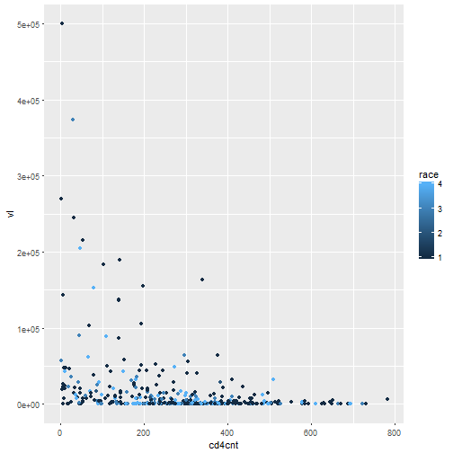
Color of points
Not only can we add color to the aesthetic portion but we can add it into the particular layers.
library(dplyr)
library(ggplot2)
ggplot(data, aes(x=cd4cnt, y= vl)) +
geom_point(color=blue)
Color of points

Size
Now that we can color the points and color by groups we can also add the attributes of different sizes.
library(dplyr)
library(ggplot2)
ggplot(data, aes(x=cd4cnt, y= vl, size=symptom)) +
geom_point()
- Note that whenever you see an attribute inside the
aes()function it applies that attribute to a particular variable. - In this case, the size of the points will be increased depending on the number of symptoms.
Size
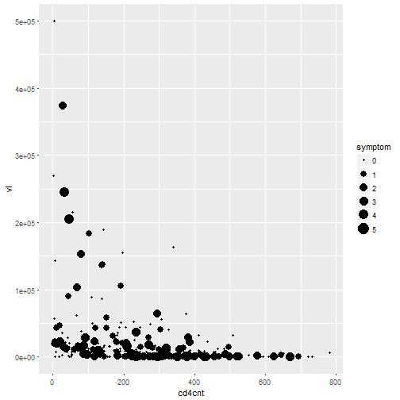
Shape
- One other important attribute to distinguish between groups can be to have a unique shape for each group.
- This time we add
shape=raceinto theaes()function and have a unique shape for each specific race.
library(dplyr)
library(ggplot2)
ggplot(data, aes(x=cd4cnt, y= vl, shape = race)) +
geom_point()
Shape
## Error: A continuous variable can not be mapped to shape

Facetting
Facetting
- Facetting is an excellent way to look at categorical data.
- This is where we split up the graphs and create a graph for each category.
- We will learn about two basic functions:
facet_wrapfacet_grid
facet_wrap
We first will consider a
facet_wrap:ggplot(data, aes(x=cd4cnt, y= vl)) + geom_point() + facet_wrap(~race)
facet_wrap
- Notice that we are still working with the cd4cnt versus viral load.
- We start out with our original scatter plot.
- Then we add yet another
layer. - This layer is the
facet_wrap()where we wrap it based on race.
facet_wrap
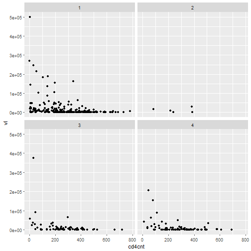
facet_grid
We then will note a similar effect when we use facet_grid():
ggplot(data, aes(x=cd4cnt, y= vl)) +
geom_point() +
facet_grid(~race)
facet_grid
- This is where the language of graphs really helps.
- We first take the data and group it based on cd4cnt and viral load.
- We state to place these as points on a graph.
- Finally we use the
facet_grid()to take that plot and split it by the race. - Each time you add a layer you can accomplish a little more towards your goal.
facet_grid

What about Other plots?
So far we have been focusing on scatter plots. As we continue to move through this section we will note that there are many other geom functions that can be used:
geom_smoothfits a smoothing line in datageom_boxplotbox and whisker plot of datageom_histogramandgeom_freqpolydistribution graphsgeom_bardistribution of categorical datageom_pathandgeom_linelines between data points
Smoothing
Smoothing
- It can be hard to view trends with just points alone.
- Many times we wish to add a smoothing line in order to see what the trends look like.
- This can be especially helpful when trying to understand regressions.
Smoothing
- We will take out scatter plot and apply a smoothing line to this:
ggplot(data, aes(x=cd4cnt, y= vl)) +
geom_point() +
geom_smooth()
Smoothing
- Again, the smoothing line comes after our points which means it is another layer added onto our graph:

Smoothing
- Note that the
geom_smooth()function adds confidence bands on the smooth as well. - We can remove these by adding
se=FALSEinside thegeom_smooth()function:
ggplot(data, aes(x=cd4cnt, y= vl)) +
geom_point() +
geom_smooth(se=FALSE)
Smoothing

On Your Own: Rstudio Practice
- Consider what happens when you switch the layers around.
- Graph just the data step:
ggplot(data, aes(x=cd4cnt, y= vl)) - Then add just the smooth
ggplot(data, aes(x=cd4cnt, y= vl)) + geom_smooth() - Finally add the points in:
ggplot(data, aes(x=cd4cnt, y= vl)) + geom_smooth() + geom_point()
- Graph just the data step:
Varying the Smooth
- We have so far just seen how to add the smooth without being able to do anything but add or subtract the confidence bands.
- We now will change the smoothness of our smooth that we added.
- To do so we add
span=__inside thegeom_smooth()layer:
ggplot(data, aes(x=cd4cnt, y= vl)) +
geom_point() +
geom_smooth(span = 0.1)
ggplot(data, aes(x=cd4cnt, y= vl)) +
geom_point() +
geom_smooth(span = 1)
Varying the Smooth

Varying the Smooth
- Note that with
span = 0.1we have a more rough smoothing than we had previously.

Different Types of Smooths
- There are different types of smooths that we can do. We will consider:
loessgam
Loess Smooths
- Loess smoothing is a process by which many statistical software do smoothing.
- In
ggplot2this should be done when you have less than 1000 points, otherwise it can be time consuming.
ggplot(data, aes(x=cd4cnt, y= vl)) +
geom_point() +
geom_smooth(method="loess")
Loess Smooths
- As you can see with the code we just add
method="loess"into thegeom_smooth()layer.
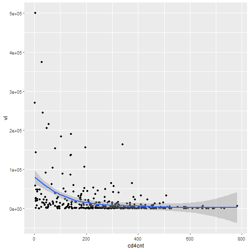
gam Smoothing
gamsmoothing is called generalized additive mode smoothing.- It works with a large number of points.
- We specify this by adding
method="gam", formula = y~s(x)into thegeom_smooth()layer.
library(mgcv)
ggplot(data, aes(x=cd4cnt, y= vl)) +
geom_point() +
geom_smooth(method="gam", formula = y ~s(x))
gam Smoothing
- The code for this is very similar and we can see how it looks below:

Graphs to Compare Categorical and Continuous Data
Graphs to Compare Categorical and Continuous Data
- Many times we need to compare categorical and continuous data.
- We will consider the following
geom_functions to do this:geom_jitteradds random noisegeom_boxplotboxplotsgeom_violincompact version of density
Jitter Plot
- In when you group continuous data into different categories, it can be hard to see where all of the data lies since many points can lie right on top of each other.
- The jitter plot will and a small amount of random noise to the data and allow it to spread out and be more visible.
ggplot(data, aes(x=race, y= vl)) +
geom_jitter()
- We can add this as another layer just like we did with
geom_point().
Jitter Plot
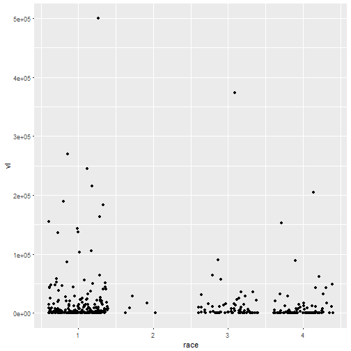
Boxplot
- Boxplots are one of the most commonly used statistics plots to display continuous data.
- It is extremely useful to evaluate the distribution of a continuous random variable across multiple groups.
- We can easily make this by adding a
geom_boxplot()layer:
ggplot(data, aes(x=race, y= vl)) +
geom_boxplot()
Boxplot
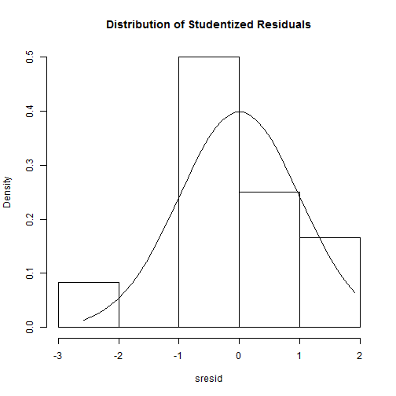
Violin
- Another plot to help display continuous data among different categories.
- In order to deal with multiple data points lying in a close area, the violin plot is wider at points where the data is bulked.
- We can simply code this with a
geom_violin()layer:
ggplot(data, aes(x=race, y= vl)) +
geom_violin()
Violin
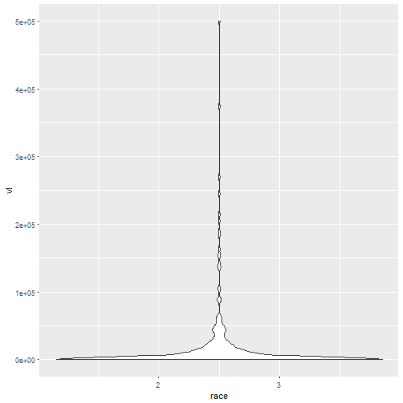
Continuous Distributions
Continuous Distributions
- If we consider just looking at continuous variables we become interested in understanding the distribution that this data takes on.
- We will explore continuous data using:
geom_histogram()shows us the distribution of one variable.geom_freqplotuses lines rather than boxes to show the distribution.
Histograms
- Another very common graphic that most people have seen and used is the histogram.
- This is common among continuous data where the data is split up into bins and the frequency of those bins is displayed.
- They are not to be confused with bar charts though!
- There are no gaps in a histogram. We can add a histogram layer simply by using the
geom_histogram(), if we would like to specify the width of bins we can do that by usingbinwidth=__:
ggplot(data, aes)) +
geom_histogram(binwidth=25)
ggplot(data, aes( vl)) +
geom_histogram(binwidth=1)
Histograms

Histograms
- If we wanted to allow for more preciseness then we could use the bin width of 1:
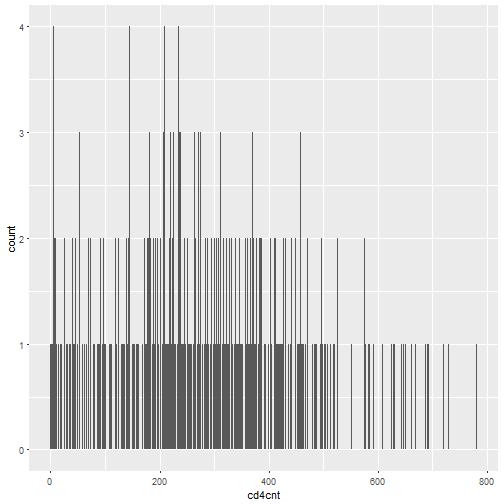
Frequency Plots
- Frequency plots are very similar to histograms.
- Instead of just having bars to display the frequency in a bin, the frequency plot would place a point at the height of the bar and then connect them with lines. We can simply add this with the
geom_freqpoly()layer. - We again can use the
binwidth=__command:
ggplot(data, aes(cd4cnt)) +
geom_freqpoly(binwidth=25)
ggplot(data, aes( cd4cnt)) +
geom_freqpoly(binwidth=1)
Frequency Plots
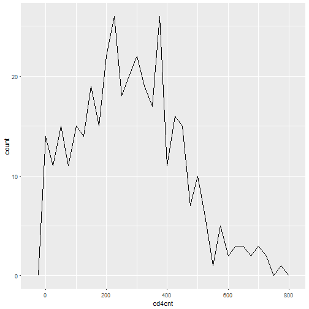
Frequency Plots
- We can also use a more precise bin width.
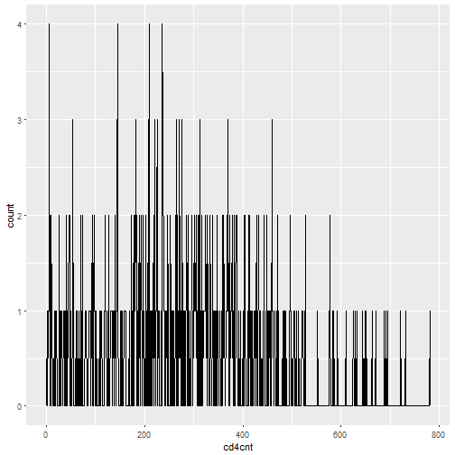
Adding Aesthetics
- Just like in the earlier part of this unit we saw that it was possible to add a great deal of aesthetics to plots.
- We will now view how these changes work on these
geom_functions:
ggplot(data, aes(cd4cnt, color=race)) +
geom_freqpoly(binwidth=25)
Adding Aesthetics
- If we add grouping color by race we can see the plot below.
- Notice that we now have multiple frequency plots without having to use faceting.
Adding Aesthetics

Adding Aesthetics
- Instead of just coloring the lines, we can use the
fill=__function in order to fill a color by race in this case. - Then we create histograms and finally in order to separate the plots out so we can see things better we use facetting:
ggplot(data, aes( cd4cnt, fill = race)) +
geom_histogram(binwidth=20) +
facet_wrap(~race)
Adding Aesthetics

Extra Graphs
Bar Charts
ggplot(data, aes( race) )+
geom_bar()

Line and Path plots
ggplot(data, aes(cd4cnt, vl)) +
geom_line()
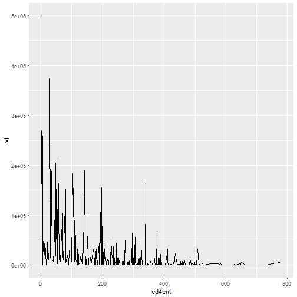
Labeling
Labeling
- It is very important when making graphs to be able to label features.
- We will look at various ways in which we can label our graphics now.
Labeling the Axes
- We can add a lot of features to the axes but for now we will just change labels.
- We use
xlabandylabfor this, if we set them toNULLwe have blank axes labels. - For example we can make a graph based on departure viral load and speed:
ggplot(data, aes(vl, cd4cnt)) +
geom_point(alpha = 1 / 3) +
xlab("Viral Load)") +
ylab("CD4 Count")
Labeling the Axes
- We can see that the
xlab()and theylab()functions are just added in as layers. - They produce the graph below.

Other Text Labels
- Aside from labeling the axes, many times we want to add other text into our graphics.
geom_textwill allow a user to add text to a graph. - We simply add
geom_text()as a layer and this layer has the following options:- the option
familyallows a user to specify font. - the option
fontfaceallows a user to specify: plain, bold or italic. hjust, vjustallows a user to specify location of the text.sizeallows the user to adjust the size of a graph.
- the option
Font Families
- We will first look at the different font styles that could be used with
geom_text()using thefamilyoption. - These 3 fonts work with every type of graph in ggplot:
df <- data.frame(x = 1, y = 3:1, family = c("sans", "serif", "mono"))
ggplot(df, aes(x, y)) +
geom_text(aes(label = family, family = family))
Font Families
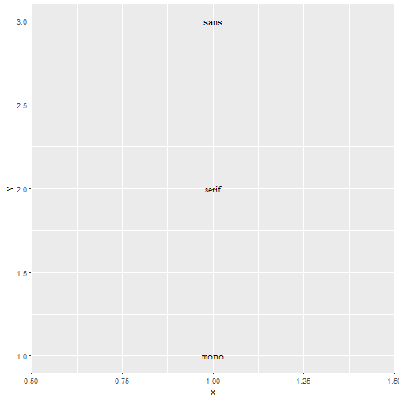
Font Face Styles
- Many times we also wish to add other attributes to our text.
The font face allows for plain text, bold text, and italic text.
df <- data.frame(x = 1, y = 3:1, face = c("plain", "bold", "italic")) ggplot(df, aes(x, y)) + geom_text(aes(label = face, fontface = face))Once again,
geom_text()is a layer and this time we use the text labels of:- plain
- bold
- italic
Font Face Styles
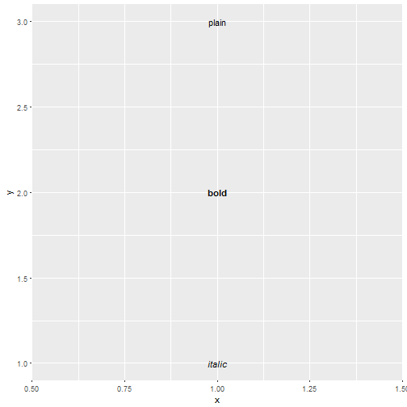
Nudge to label existing points
- The nudge allows us to move the text horizontally or vertically to label points.
- If we did not do this, our text would lie directly on top of the point.
- We use
nudge_xandnudge_yin order to move the text in thexandydirection respectively.
df <- data.frame(trt = c("a", "b", "c"), resp = c(1.2, 3.4, 2.5))
ggplot(df, aes(resp, trt)) +
geom_point() +
geom_text(aes(label = paste0("(", resp, ")")), nudge_y = -0.25) +
xlim(1, 3.6)
Nudge to label existing points
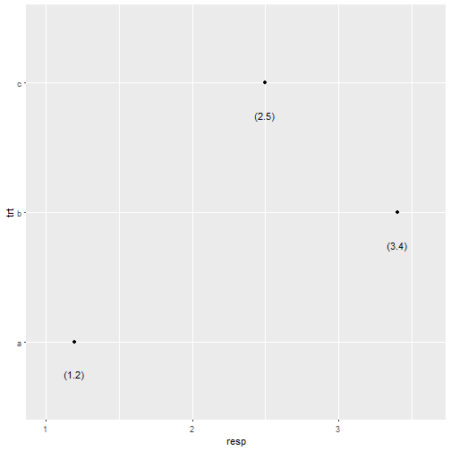
Labels Rather than a Legend
- One other common feature of a graph can be to use labeling rather than a legend.
- The code is a bit more advanced for this phase, below you can see that we have done a few different things.
- We created 2 plots
p1andp2. p2usesgeom_dl()to add labels as a legendgrid.arrange()allows us to place the graphs side by side.
- We created 2 plots
library(directlabels)
library(gridExtra)
p1 = ggplot(mpg, aes(displ, hwy, colour = class)) +
geom_point()
p2 = ggplot(mpg, aes(displ, hwy, colour = class)) +
geom_point(show.legend = FALSE) +
geom_dl(aes(label = class), method = "smart.grid")
grid.arrange(p1,p2, ncol=2)
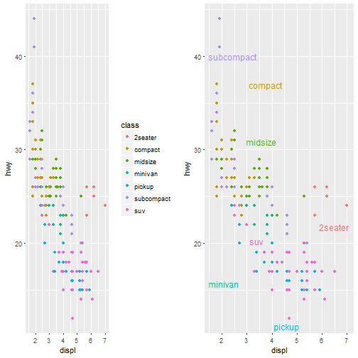
Other Aesthetic Mappings
Sometimes we map aesthetics to constant values. This allows us to distinguish between layers.
ggplot(data, aes(cd4cnt,vl )) +
geom_point() +
geom_smooth(aes(color="lm"), method="lm", se=F) +
geom_smooth(aes(color="loess"), method="loess", se=F) +
labs(color = "Method")
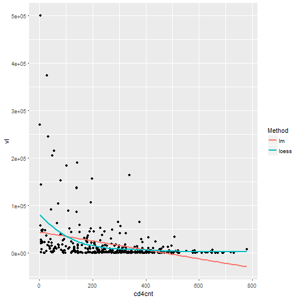
Statistical Transforms
- Many times we wish to do more than what we have seen at this point.
- We wish to add different statistical features to the graph.
stattransforms the data. - This is typically just a summary of some sort.
- Useful ones are smoothing or identity.
- You typically do not call them directly but the
geomdoes.
ggplot(data, aes(race, vl)) +
geom_point() +
stat_summary(geom = "point", fun.y = "mean", color = "red", size = 3)
ggplot(data, aes(race, vl)) +
geom_point()+
geom_point(stat = "summary", fun.y = "mean", color = "red", size = 3)
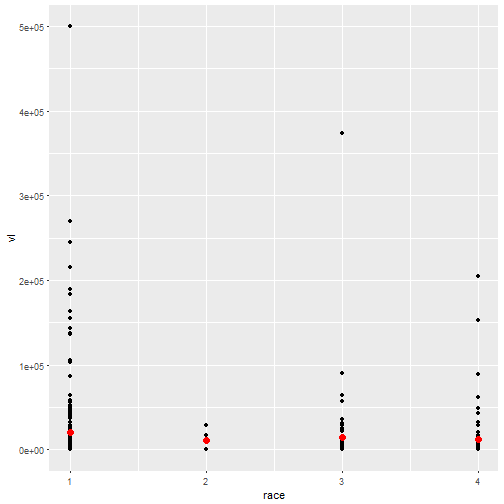
Position Adjustments
- We can use position adjustments to tweak the position of elements.
- For example with bars:
position_stack()stack overlapping barsposition_fill()stack overlapping bars and scale to 1position_dodge()place overlapping bars next to each other.
dplot <- ggplot(diamonds, aes(color, fill = cut)) +
xlab(NULL) + ylab(NULL) + theme(legend.position = "none")
# position stack is the default for bars, so geom_bar()
# is equivalent to geom_bar(position = "stack").
p1 = dplot + geom_bar()
p2 = dplot + geom_bar(position = "fill")
p3 = dplot + geom_bar(position = "dodge")
grid.arrange(p1,p2,p3, ncol=3)

Modifying Axes and Scales
Axes and Legends
- We can modify both axes and legends.
ggplot2actually considers these objects to be the same type of object. - This means if we learn the tools to work with a legend then we can change the Axes in the same way and vice-verse.
| Axis | Legend | Argument Name |
|---|---|---|
| Label | Title | name |
| Ticks, grid line | Key | breaks |
| tick Label | Key Label | labels |
Scales
- Scales are required and included in every plot.
- If we do not specify them,
ggplot2includes them in the background. - For example:
geom(data, aes(cd4cnt, vl)) + geom_point(aes(color="race"))
is read in by ggplot2 as :
geom(data, aes(cd4cnt, vl))+
geom_point(aes(color="race")) +
scale_x_continuous() +
scale_y_continuous() +
scale_color_discrete()
Scale Title
- The first argument in a scale function is the axes/legend title.
- We can use 2 types of text:
- Strings
- Mathematical Expressions
- For example we will create 2 plots below.
- They will be the same plot but we will allow the first one to just be a string and the second to be a mathematical expression.
Scale Title
df <- data.frame(x = 1:2, y = 1, z = "a")
p <- ggplot(df, aes(x, y)) + geom_point()
p1 = p + scale_x_continuous("X axis")
p2 = p + scale_x_continuous(quote(a + mathematical ^ expression))
grid.arrange(p1,p2, ncol=2)
Scale Title
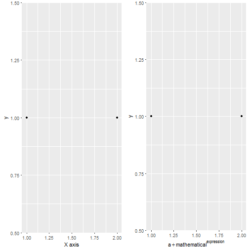
Labeling a Scale
- Earlier we learned about common labeling functions such as:
xlabylablabs
- We can also use common text notations in order to add further details:
p <- ggplot(df, aes(x, y)) + geom_point(aes(colour = z))
p1 = p + xlab("X axis") + ylab("Y axis")
p2 = p + labs(x = "X axis", y = "Y axis",
colour = "Colour\nlegend")
grid.arrange(p1,p2, ncol=2)

Breaks and Labels
- We not only like to be able to change the labels of scales but it can be helpful to choose the tick marks as well.
- The
breaksargument controls what values appear as the tick marks on axes and keys.
df <- data.frame(x = c(1, 3, 5) * 1000, y = 1)
axs <- ggplot(df, aes(x, y)) +
geom_point() +
labs(x = NULL, y = NULL)
axs
axs + scale_x_continuous(breaks = c(2000, 4000))
axs + scale_x_continuous(breaks = c(2000, 4000), labels = c("2k", "4k"))
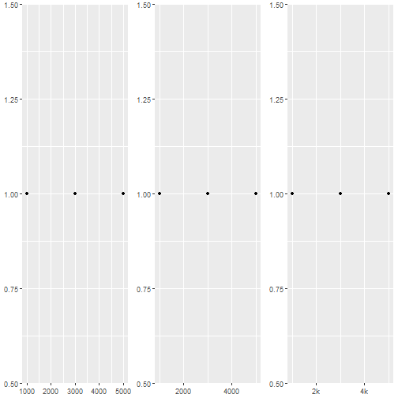
- As it was state before
ggplot2considers axes and legends to be the same type. - This means if we are creating a continuous scale with a bar graph coloring or even a heat map we can change the tick marks on the legend as well.
leg <- ggplot(df, aes(y, x, fill = x)) +
geom_tile() +
labs(x = NULL, y = NULL)
leg
leg + scale_fill_continuous(breaks = c(2000, 4000))
leg + scale_fill_continuous(breaks = c(2000, 4000), labels = c("2k", "4k"))
- We see that just like the axes above we now have three different legends with the tick marks and labels of them changed.

- We can also force different axes to be on a discrete scale rather than continuous.
df2 <- data.frame(x = 1:3, y = c("a", "b", "c"))
ggplot(df2, aes(x, y)) +
geom_point()
ggplot(df2, aes(x, y)) +
geom_point() +
scale_y_discrete(labels = c(a = "apple",
b = "banana", c = "carrot"))

Legends
Legends
- Many of the previous characteristics are the same for both axes and legends.
- Legends can:
- Display multiple aesthetics from multiple layers
- Appear in many different locations.
- Can be sized and ordered differently.
- You can also choose what is placed in a legend.
- We use the
show.legendcommand to do this.
Legends
ggplot(df, aes(y, y)) +
geom_point(size = 4, colour = "grey20") +
geom_point(aes(colour = z), size = 2)
ggplot(df, aes(y, y)) +
geom_point(size = 4, colour = "grey20",
show.legend = TRUE) +
geom_point(aes(colour = z), size = 2)
Legends
- Sometimes we wish to have the legends display different things.
- For example if we use transparent colors in the plot we may want solid colors in the legend.
- The
alphacommand will make the colors more transparent. - However we can override the legend colors and set the
alphadifferently:
norm <- data.frame(x = rnorm(1000), y = rnorm(1000))
norm$z <- cut(norm$x, 3, labels = c("a", "b", "c"))
ggplot(norm, aes(x, y)) +
geom_point(aes(colour = z), alpha = 0.1)
ggplot(norm, aes(x, y)) +
geom_point(aes(colour = z), alpha = 0.1) +
guides(colour = guide_legend(override.aes = list(alpha = 1)))
Legends

Legend Layouts
- We can choose the specific layout of the legend.
- For example we can place it at the "top", "bottom", "right" , "left" or not even have a legend at all.
df <- data.frame(x = 1:3, y = 1:3, z = c("a", "b", "c"))
base <- ggplot(df, aes(x, y)) +
geom_point(aes(colour = z), size = 3) +
xlab(NULL) +
ylab(NULL)
base + theme(legend.position = "right") # the default
base + theme(legend.position = "bottom")
base + theme(legend.position = "none")
Legends